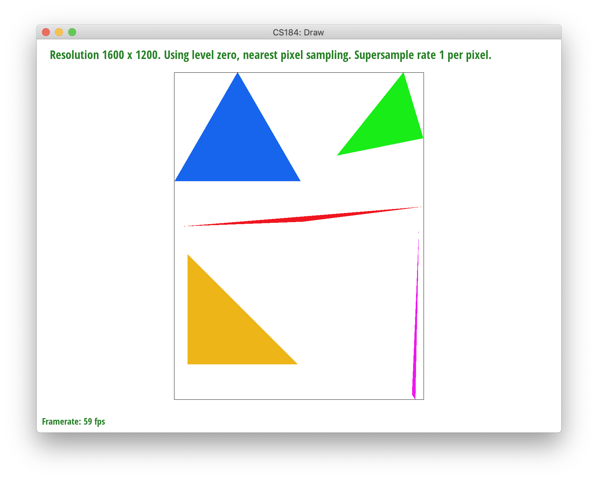

|
|

|

|

|

Throughout the course of this project, we learned the basics to rasterization and implemented the material mentioned in lectures 2-5 to rasterize and draw triangles. Starting from the basics with drawing triangles, we advanced into the process of refining our triangles through supersampling, transforms, and texture mapping using antialiasing.
Drawing, smoothing, and transforming basic single-color triangles.
To draw a single-color triangle, we implemented basic rasterization sampling at rate = 1. Implementing the `rasterize_triangle()` function, we filled in each pixel in our resolution with a specific given color. The function iterated over the bounded width and height of the triangles using max_x and min_x of the three points to bound our x-axis and respectively, max_y and min_y of the three points to bound our y-axis. Using two loops and each of the respective bounds, we accessed each relevant, possible point within the frame that could exist in the triangle. Then, we utilized the Point in Triangle test to validate whether each individual pixel should be rasterized.
Note: each pixel is accessed at (x+0.5, y+0.5) to center the pixel.
|

|
|
|
|
Yay, we successfully rasterized basic triangles! However, there seems to be an issue with jaggies in our rasterized images. To fix this, we used a process called supersampling, an antialiasing method, in which we use subpixels to help sample our image and refine our color output. The possible sampling rates are 1, 4, 9, and 16 supersamples/pixel.
To begin the supersampling process, we began by implementing small changes to help our buffer memory and helper functions adjust to the respective sampling rate inputted by `sample_rate` parameter from DrawRend. Then, to implement the supersampling functionality, we needed to adjust our rasterize_triangle(), fill_pixel(), and resolve_to_frame_buffer() functions.
A large part of this process relied on our implementation of rasterize_triangle() and resolve_to_framebuffer() in which we used our sample_buffer as a helper buffer to connect to our final framebuffer_target output. To start, we largely build on our implementation from Task 1 in which we use 2 for loops over the width and height of the triangle we want to rasterize in rasterize_triangle().
Instead of simply iterating though, we created 2 additional for loops to subsample and access the subpixel information of each pixel accessed in the outer for loops. One way to think about it is: In our first outer for-loops, we're accessing the current image space by indexing at each relevant pixel, and the purpose of our inner two for-loops is to help access the space within the pixel, allowing us to develop more detailed information about the color space and how the pixel should be represented.
In Task 1, we simply supersampled at a rate of 1, the pixel itself. To factor in sampling at a rate > 1, we created two inner loops with a lower bound of 0 and an upperbound constraint of sqrt(sample_rate). By this, we can sample NxN time "inside" each pixel, with N = sqrt(sample_rate). Inside each pixel, supersampling allows us to step horizontally along the x-axis and vertically along the y-axis by sqrt(sample_rate). For example, if we supersampled at 4 per pixel, we'd step horizontally by 2 and vertically by 2 to access the 4 quadrants of the pixel. By implementing NxN sampling rather than being constrained to 1x1 sampling per pixel, we also need to shift the center point for each subpixel accessed. Our calculations estimated the shift to be current(x,y) + float((0.5 + (current_step(x,y)) / sqrt(sample_rate)) to account for the substep in x, y, and sampling rate. Additionally, our indexing to the sample_buffer and frame_buffer changed to `(y * sqrt(sampling_rate) + ystep) * width * lerate + x * lerate + xstep` to account for the offset and sampling rate for each subpixel.
Woohoo! Now that we can access each subpixel, we can give a more accurate representation on how to input color into which respective subpixel to represent the pixel better. Our resolution is still the same though, so now we need to take our subpixels and average them for our outputted pixel color value which is implemented in resolve_to_frame_buffer().
Supersampling is helpful because it helps lessen the impact and possibility of jaggies creating a jarring image as seen in the images from task 1. This antialiasing method gives us the additional information needed to measure out how our pixels should be outputted. Instead of creating jagggies, supersampling allows us to measure whether color should remain the same or be lessened to smooth the image out. By using supersampling, we can average the subpixel values measure to create a gradient of colors rather than have stark color contrasts and as a result, jaggies. In other words, we're removing the higher frequencies color changes across all the pixels to blend the image together better.
However, at the same time, supersampling can be expensive as it creates additional calculations and can take large computations or be very costly for large images or resolutions.
Below, you can see the result of supersampling over various supersampling rates. At rate 1, the jaggies and high frequency colors are sharp. At rate 4, the edges begin slowly smoothing out a bit. And when we reach rate 16, the triangle edges seem to smoothen out completely.
|
|
|
|
|
|
To implement transforms, we created functions for basic matrix transformations that calculated translation, scaling, and rotation.
8-Bot was formed by implementing a series of rotations and editing a few translations. We wanted the robot to do a fun dance, so we first played with their legs by rotating the top half of their legs outwards by about 45 degrees and the bottom half of their legs inwards by about 45 degrees respectively. Similarly, we followed the same process as the legs for the robot's arms, except reversed. The bottom half of the arms are rotated slightly outwards by 45 degrees while the top half is rotated slightly inwards by 45 degrees. To account for the spacing changes caused by rotation, we translated the bottom and top half of the arms and the legs slight by plus or minus 20 units.
Barycentric coordinates are extremely useful as another way to manipulate and express the position of any point located on a triangle with three scalar values. In other words, barycentric coordinates are an areal coordinate system in which we can interpolate across the points in a triangle. The ability to interpolate across the triangle range from properties such as color, position, and texture coordinates, and are essentially another way to represent a triangle.
To calculate barycentric coordinates, the coordinate is fairly simple using our three triangle verticies A (x0,y0), B (x1,y1), and C (x2,y2). Using these values, we can calculate the corresponding weights: alpha, beta, and gamma. The relationship of alpha, beta, and gamma is shown by the equation alpha + beta + gamma = 1. To calculate alpha, beta, and gamma, we can find alpha and beta using a line interpolation and specifically the equation derived in lecture 2:
alpha = Lbc(x,y)/Lbc(x_A, y_A)
beta = Lca(x,y)/Lca(x_B,y_B)
gamma = 1 - alpha - beta
From these steps, we can calculate the barycentric coordinates through
(x,y) = alpha*(x0, y0) + beta*(x1, y1) + gamma*(x2, y2)
With these scalar values, we can represent the color values interpolated by the triangle.
To visualize this, view the triangle below. Each of the three verticies forming the triangle are a different RGB value which we can represent with P0, P1, P2. P0 (left) is red, P1 (right) is blue, and P2 (top) is green. Using the barycentric coordinates, we interpolated the triangle, and thus, you can see the resulting output example shown.
An additional example of test7 is shown below to show another version of interpolation through barycentric coordinates.
Generally, pixel sampling refers to sampling specific sample points from an image at a specified rate, and the more you sample (the higher the rate), the smoother the output since it averages colors more frequently for a better color representation.
In regards to texture mapping, pixel sampling refers to evaluating a sample points in order to get the corresponding (u,v) coordinate in the texel space. If there's a texel point for the (x,y) point, we calculate the subpixel's barycentric coordinates to get its position within the triangle and then we use the texture triangle's vertices to get the subpixels (u,v) location.
Depending on the user input, we sample nearest or bilinearly with a default mipmap level of 0. In nearest pixel sampling, we set the value of the subpixel to the color of the closest texel by the (u,v) point in texel space. We have to index into the texel array, but be mindful that its 1-dimensional, so we have to scale by the width and the height and multiply by 3 for both x and y to account for the RGB representation. After getting that color, we set the subpixel’s color as such. Then, in bilinear sampling, we sample the colors of the four closest texels to our current (u,v). We get the colors the same way we described earlier and linearly interpolate and get the weighted average of the four points.
|
|
|
|
|
|
As we see, increasing the sampling rate generally increases the accuracy of the color. However, nearest sampling hardly gets the white line if at all, because it’s a thin and high-frequency line of pixels. Bilinear sampling helps with aliasing and frequency effects, and is able to catch the white line since it samples the four nearest pixels and averages them out. That said, it also seems to generally blur more as well. Bilinear interpolation will perform better in terms of aliasing artifacts and continuous data, since output cells are calculated based on the relative position of the four nearest values from the input grid. Nearest neighbor sampling doesn't fare as well with high-frequency color points but is faster and preserves original color values.
Level sampling is using specific samples from a series of "levels" of an image, each subsequent level having lower and lower resolutions with a factor of 2. Level sampling means sampling from between different mipmaps levels to provide different levels of detail depending on distance between the object and the viewpoint. For example, in portrait mode on a phone, you are using lower resolution for the background and higher resolution for your face.
In order to implement this, we built on our code from task 5. We created a params struct to pass into the tex.sample() method to streamline which sampling methods are used. We find the uv coordinates of (x,y+1), (x+1, y) and then use barycentric coordinates to obtain the differentials, which allow us to determine the distance away from the viewpoint. These differential/distance vectors (p_dx_uv and p_dy_uv are scaled to the appropriate texture dimensions for width and height, and then we use the equation from class for level = max(sqrt((du_dx * du_dx)+(dv_dx * dv_dx)),sqrt((du_dy * du_dy)+(dv_dy * dv_dy))). The effect of this is to produce a high level if the distance of the point in texture space is large. If it's small, then the mipmap level is also small. However, these calculations return a float. Depending on the user input, we either use trilinear sampling or nearest level sampling. If the user specified the nearest level, we just index into that level using the same procedure from task 5 of indexing into the texel array. If the user specifies bilinear level sampling, we interpolate and take weighted averages between the lower and upper level, and we can do so with either nearest pixel or bilinear pixel sampling, with the logic from the previous task at the corresponding level(s).
Level 0 or nearest level with nearest sampling is the fastest. Nearest pixel sampling is quick, simple, and preserves color values as they originally appeared. However, nearest pixel sampling and nearest level sampling also produce more antialiasing than the others. Bilinear pixel sampling is better, albeit slower. It’s better because it takes weighted averages of nearby pixels and in doing so makes the quality smoother and accurate. It’s especially useful for continuous data. Still, it’s slower because of increased rates of calculation and can cause blurring and displacement of colors. Supersampling makes a large difference, as, one would think, it samples more points and therefore has more data, but it also adds another performance barrier in regards to both memory and speed since you loop through sample_rate number of times. Compared to nearest level, bilinear level sampling fares much better – although both scale blurriness with distance from the viewpoint, bilinear/trilinear level sampling is more accurate and deals better with antialiasing but it is slowest because you have to sample across layers and make a lot of calculations over nested loops. Overall, the best quality and worst performance is produced by trilinear level sampling with bilinear pixel sampling. The best performance and worst quality is produced by nearest pixel sampling at level 0.
|
|
|
|
|
|
You can view our website at: https://ashchu.github.io/cs184project1
If you are not participating in the optional art competition, don't worry about this section!
Ah! we didn't make it to this part :(
General Key Learnings